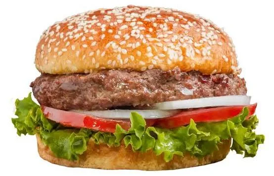

A hamburger is an iconic global staple consisting of a grilled or fried patty of ground beef nestled inside a sliced bun, typically accompanied by toppings like lettuce, tomato, onions, pickles, cheese, and condiments like ketchup, mustard, or mayonnaise. Known for its perfect balance of textures—a juicy, savory core paired with a soft, pillowy bun—it is arguably the most recognizable comfort food in modern culinary history.
The Meat Selection: Choose ground beef with an 80/20 lean-to-fat ratio (such as ground chuck). Fat is essential; without it, your burger will turn dry, crumbly, and flavorless.
The Patties: Gently shape 4 to 6 ounces of beef into round patties about 1/2-inch thick. Ensure they are slightly wider than your buns, as the meat shrinks during cooking. Press a slight dimple into the center of each patty with your thumb—this prevents the burger from puffing up into a football shape on the heat. Keep the meat cold until right before cooking
The Prep: Slice your tomatoes, shred your lettuce, and thinly slice your onions. Split your hamburger buns and spread a thin layer of butter on the cut sides.
Toast the Buns: Place the buttered buns face-down on your hot skillet or grill until they are golden brown and toasted. Set them aside. This creates a barrier so the juices don't make the bread soggy.
Sear the Meat: Crank the heat to high. Season the cold patties generously with kosher salt and black pepper only right before they hit the pan. Cook for about 3 to 4 minutes without moving them to build a deep, dark crust.
Flip and Cheese: Flip the patty over. Immediately place a slice of easily-meltable cheese (like American or Cheddar) on top. To accelerate the melting, cover the pan with a lid or a metal bowl for the remaining 2 to 3 minutes of cooking.
Build the Base: Spread your chosen condiments (like a mixture of mayonnaise, ketchup, and relish) onto the bottom bun. Layer your pickles and onions first.
The Crown: Place the juicy cheeseburger patty over the pickles. Top with the tomato slice and crisp lettuce, then cap it with the top bun.
The Short Rest: Let the burger sit for just 1 to 2 minutes before biting into it. This brief pause allows the boiling-hot internal juices to redistribute throughout the meat, ensuring every single bite stays incredibly moist instead of spilling out all over your plate.